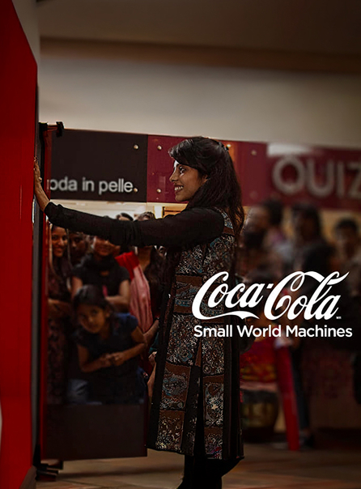

Pubblicità ed intervento sociale.
L’impatto della campagna è significativo sia a livello emotivo che mediatico. Le reazioni delle persone coinvolte, spesso caratterizzate da sorpresa, entusiasmo e commozione, rendono il contenuto altamente autentico e coinvolgente. Questo tipo di autenticità è particolarmente efficace nel contesto digitale, dove il pubblico tende a premiare contenuti percepiti come genuini. La campagna ottiene così una vasta diffusione online, diventando virale e generando un forte engagement.
“Small World Machines” rappresenta infine un’evoluzione significativa nel modo di fare comunicazione. La campagna dimostra come il marketing possa superare i confini della pubblicità tradizionale per diventare esperienza, relazione e, in alcuni casi, intervento sociale. La sua eredità è visibile nella crescente diffusione di strategie basate sull’esperienza diretta del consumatore e sulla creazione di contenuti autentici e condivisibili. Inoltre, evidenzia il ruolo sempre più importante della tecnologia come strumento per creare connessioni significative tra le persone, dimostrando come Coca-Cola sia riuscita a reinterpretare i propri valori storici in chiave contemporanea.
